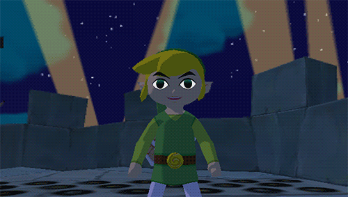

Lo Afortunado que Soy
Me siento increíblemente afortunado de tenerte en mi vida. Desde el día en que llegaste, has sido más de lo que alguna vez soñé y cada día contigo es un regalo que valoro profundamente. Tus risas tienen el poder de iluminar incluso los días más oscuros, llenándolos de luz y alegría. Cada abrazo tuyo es más que consuelo; es mi refugio seguro en medio de cualquier tormenta.
Tu presencia no solo ha enriquecido mi existencia, sino que también ha transformado mi perspectiva del amor y la vida. A tu lado, he aprendido que el verdadero amor es paciente y comprensivo, que encuentra su fuerza en la vulnerabilidad compartida y en la confianza mutua. Cada momento juntos se convierte en un capítulo precioso de nuestra historia, una historia tejida con risas, complicidad y sueños compartidos.
Cada día a tu lado es una oportunidad para crecer, aprender y explorar el mundo juntos. Tus sueños se han convertido en mis propios anhelos, y el futuro que imaginamos juntos brilla con promesas de aventuras por descubrir. Eres la persona que siempre quise encontrar, y el amor que compartimos me llena de gratitud y renovada esperanza.
